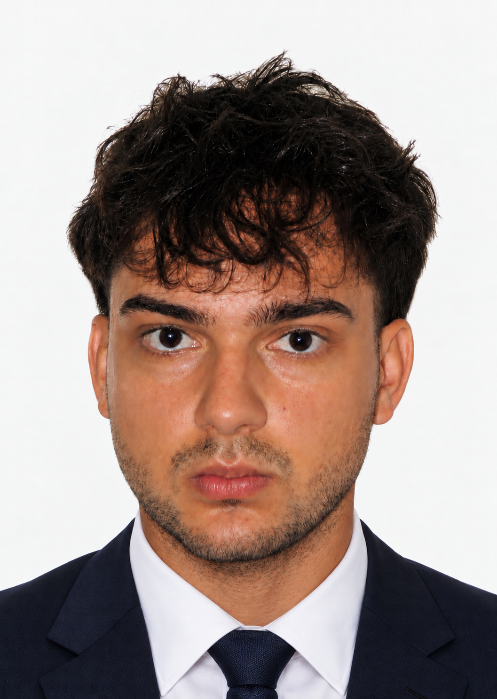
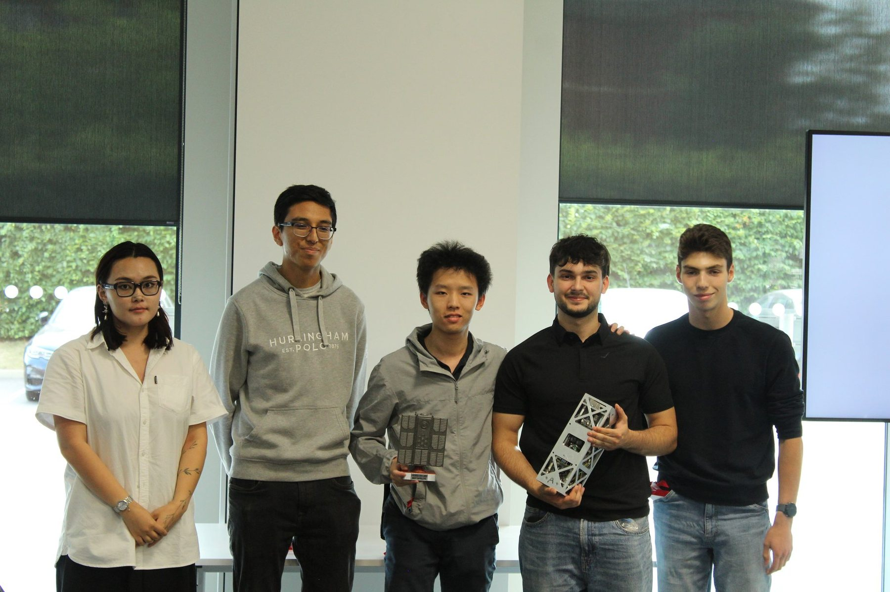
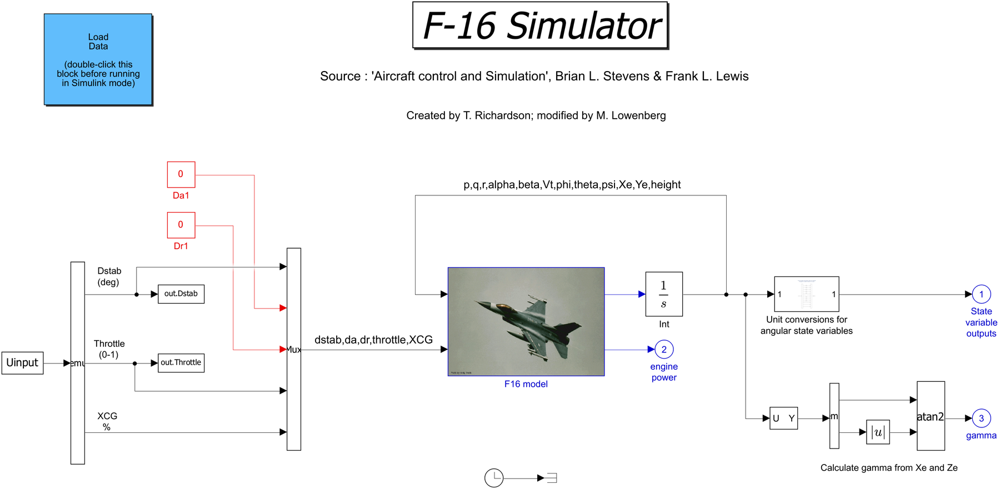
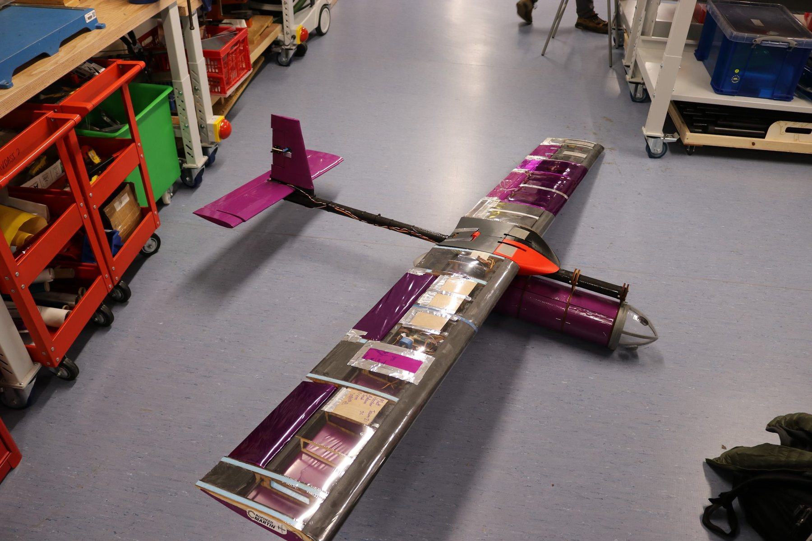
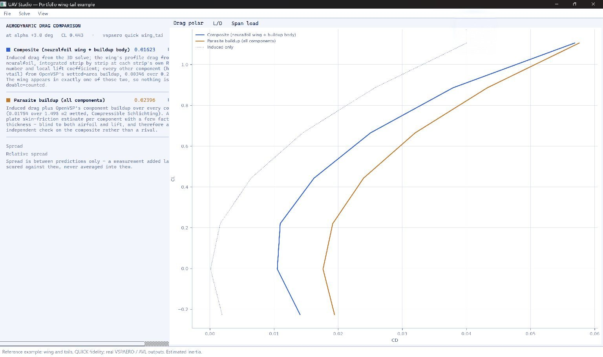
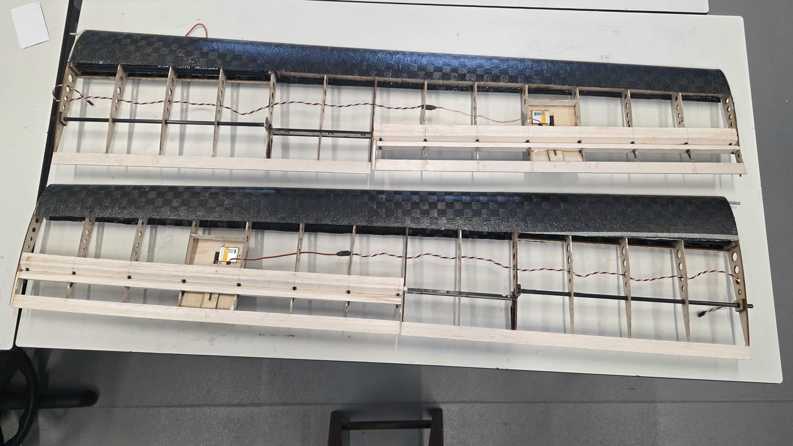

Juan Bernardo
Pastuszak
Aerospace engineer. MSc student at Imperial College London, First Class BEng from the University of Bristol.
I want to work on guidance and control for autonomous aerospace systems, with a focus on UAVs. So far I have designed a gain scheduled pitch controller for an F-16 model, built a camera-guided CubeSat pointing demonstrator and made the electronics and firmware for a rocket payload.
Looking for an early careers role starting in autumn 2027, in the UK or elsewhere in Europe. I am based in London and can relocate.
Recognition
Projects

CubeSat Vision and Attitude Control
Camera-based pointing for a student CubeSat demonstrator. I wrote the vision software and built the reaction wheel.

F-16 Gain Scheduled Control
From fixed PI gains to an airspeed scheduled controller, checked in nonlinear simulation.
 Photo: Emile Holba / Launch 4 Change
Photo: Emile Holba / Launch 4 ChangeAtmospheric Rocket Payload
I designed the payload board and wrote its firmware. It flew on HyPower’s rocket in August 2026.

Automated Composite Forming
I tested whether shear instabilities in a fast fabric-forming simulation predict real wrinkles, then formed four physical samples to check.

Agricultural Survey UAV
I worked on the wing joint and fairing, then used the tunnel pitch data to fit a model and design a PID controller in simulation.
Other projects and interests

Stinson L-5 Flight Tests
Extending a course task through simulated flight tests and a Python workflow for handling qualities analysis.

UAV Design Tool
A Python tool that runs VSPAERO and AVL and builds the state-space models. It is still in development.

UAS Challenge Wing Fabrication
Helping the team build wooden wings and carbon fibre leading edges for the UAS Challenge.